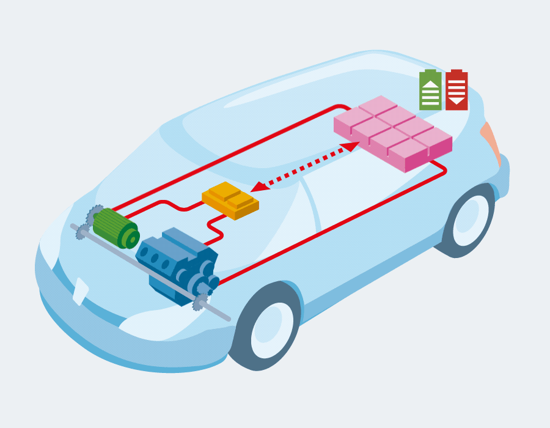

Au Cœur de l'Innovation : La Technologie Hybride
Un véhicule hybride est bien plus qu'une simple combinaison de deux moteurs ; c'est un système complexe et harmonieux où chaque composant joue un rôle crucial pour optimiser la performance et l'efficacité énergétique.
Le terme "hybride" vient du grec "hybrida", signifiant "mélange". En automobile, il désigne la synergie entre plusieurs sources d'énergie pour la propulsion.
1.1. Les Composants Clés
- Moteur Thermique : Généralement un moteur à essence (parfois diesel), il est la principale source de puissance pour les longs trajets et les fortes accélérations. Il peut également servir à recharger la batterie via un générateur.
- Moteur(s) Électrique(s) : Un ou plusieurs moteurs électriques sont responsables de la propulsion à basse vitesse, des démarrages silencieux et de l'assistance au moteur thermique lors des accélérations. Ils fonctionnent aussi en générateurs lors du freinage.
- Batterie de Traction : Cette batterie haute tension (souvent Lithium-ion ou Nickel-Métal Hydrure) stocke l'énergie électrique nécessaire aux moteurs électriques. Sa taille varie considérablement selon le type d'hybride.
- Générateur (ou Alternateur/Démarreur) : Il convertit l'énergie mécanique (du moteur thermique ou des roues au freinage) en énergie électrique pour recharger la batterie. Il peut aussi agir comme démarreur pour le moteur thermique.
- Onduleur/Convertisseur : Un composant essentiel qui gère le flux de courant entre la batterie (courant continu) et les moteurs électriques (courant alternatif). Il adapte également la tension.
- Unité de Contrôle (ECU Hybride) : Le "cerveau" du système. Ce calculateur gère en temps réel les interactions entre tous les composants, décidant quand utiliser quel moteur, quand recharger la batterie, etc.

1.2. Les Différents Types d'Hybridation
Il existe plusieurs architectures de véhicules hybrides, chacune avec ses spécificités :
-
Micro-hybride (MHEV - Mild Hybrid Electric Vehicle) :
Système le plus simple. Un alterno-démarreur renforcé assiste le moteur thermique au démarrage et lors de faibles accélérations, et récupère l'énergie au freinage. Le véhicule ne peut pas rouler en 100% électrique.
Exemple : Certains modèles Suzuki, Fiat, Kia. -
Full Hybride (HEV - Hybrid Electric Vehicle) :
Le type le plus courant. Le véhicule peut rouler sur de courtes distances et à basse vitesse en mode 100% électrique. La batterie se recharge automatiquement grâce au moteur thermique et au freinage régénératif, sans besoin d'être branchée.
Exemple : Toyota Prius, Toyota Yaris Hybride, Honda Jazz e:HEV. -
Hybride Rechargeable (PHEV - Plug-in Hybrid Electric Vehicle) :
Doté d'une batterie de plus grande capacité, il offre une autonomie électrique significative (généralement 30 à 80 km) et peut être rechargée sur une prise domestique ou une borne de recharge. Une fois la batterie déchargée, il fonctionne comme un full hybride classique.
Exemple : Peugeot 3008 Hybrid, Renault Captur E-Tech Plug-in. - Hybride en Série, Parallèle, et Mixte : Ce sont des architectures plus complexes décrivant la manière dont les moteurs thermique et électrique sont connectés aux roues. L'architecture **mixte** (ou série-parallèle), popularisée par Toyota, est la plus répandue car elle combine les avantages des deux autres, offrant une grande flexibilité.

1.3. Le Fonctionnement Synchronisé
La magie de l'hybride réside dans la gestion intelligente des deux sources d'énergie par l'unité de contrôle :
- Démarrage : Souvent en mode 100% électrique, pour un silence et une économie maximaux.
- Accélération : Les deux moteurs peuvent travailler de concert pour fournir une puissance maximale.
- Vitesse Stabilisée : Le système choisit le moteur le plus efficient. À basse vitesse, c'est l'électrique ; à vitesse de croisière sur autoroute, c'est généralement le thermique (souvent en cycle Atkinson pour l'efficacité).
- Décélération/Freinage : L'énergie cinétique est récupérée par le moteur électrique (qui agit alors en générateur) pour recharger la batterie. C'est le freinage régénératif.
- Arrêt : Le moteur thermique se coupe automatiquement pour économiser du carburant et réduire les émissions.
